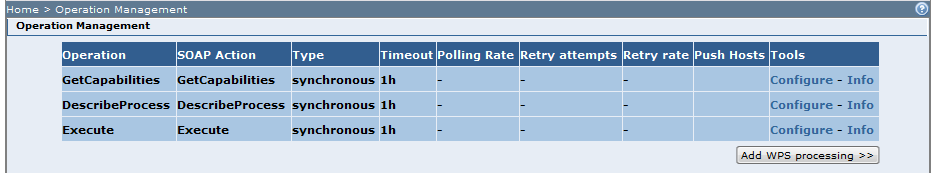
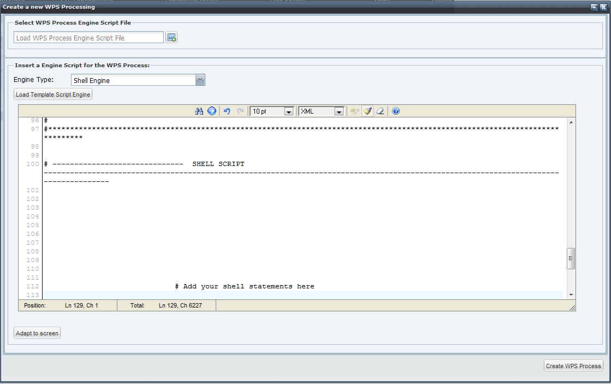
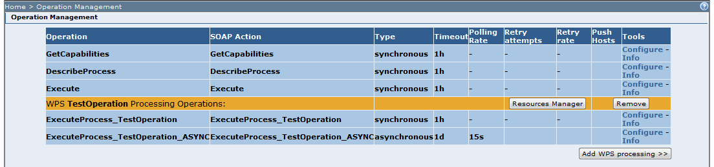

A new WPS Processing can be added to a service in order to grow its computing power.
Select a WPS service and click on the Operations management menu link. A page reporting the operations available for the selected service should be displayed.

The list should at least contain the following operations
When a new service is created the Execute and DescribeProcess operations are deployed but cannot be invoked (indeed no processing are reported in the GetCapabilities thus it is not possible to create a valid input message for the DescribeProcess and the Execute).
There are two ways to create a new processing WPS:
When done, click on the "Parse WPS Processing Describe Information” button (Describe Process created using the Edit Area) or click on the "Create” button (Describe Process created using the Wizard).
The browser should display the following pop-up interface:

This step allows you to select the processing engine to be used to process the requests. Currently only three processing methods are available: Grass Engine, Shell script or Toolbox Script.
The main difference between the three is the language/tool used to implement the processing logic. In the first case a Grass script shall be provided, in the second a bach shell script while in the third a Toolbox script is used for the processing and have to be provided. These scripts are then put in execution every time a SOAP request arrives to the service. The execution of these scripts will provide the processing logic. Toolbox will take care of setting and downloading input data so that the user shall only take care of writing the logic itself. All data to work upon shall be considered already downloaded when the user script is put in execution. For all implementation methods it is possible to write the script directly in the text area or to upload one from disk.
Select one of the methods and provide the script logic by loading a file from disk (if available) or by loading the Template provided by the framework and filling the template with the service logic. Then click on the Create WPS process button. A new operationis now created.
For each new WPS processing TOOLBOX creates a new synchronous operation called ExecuteProcess_<ProcessingName>, if the WPS processing is asynchronous (this information is set in the Describe Process document) TOOLBOX creates a asynchronous Operation called ExecuteProcess_<ProcessingName>_ASYNC.
<ProcessingName> is the value of the ProcessingName tag included in the Describe process document.
In the image below we have created a new asynchronous processing named TestOperation

The Resource Manager allows updating both the describe information as well as the processing logic.
The Remove button allow removing a WPS operation.
 The Toolbox implements both the WPS
05-007r7 1.0.0 SOAP binding as well as the Corrigendum for OpenGIS Implementation Standard Web Processing Service (WPS) 1.0.0 (0.0.8) 08-091r6. Thus it can be invoked as a simple SOAP wrapping of the Execute POST message (as described in 08-091r6) or as encoded message ExecuteProcess_<ProcessingName> (as desscribed in WPS
05-007r7 1.0.0).
The Toolbox implements both the WPS
05-007r7 1.0.0 SOAP binding as well as the Corrigendum for OpenGIS Implementation Standard Web Processing Service (WPS) 1.0.0 (0.0.8) 08-091r6. Thus it can be invoked as a simple SOAP wrapping of the Execute POST message (as described in 08-091r6) or as encoded message ExecuteProcess_<ProcessingName> (as desscribed in WPS
05-007r7 1.0.0).
 For asynchronous requests the Toolbox implements the WPS specification but extend it with the support to the WS-Addressing. In general:
For asynchronous requests the Toolbox implements the WPS specification but extend it with the support to the WS-Addressing. In general:
Refer to the following page for more information regarding the asynchronous support